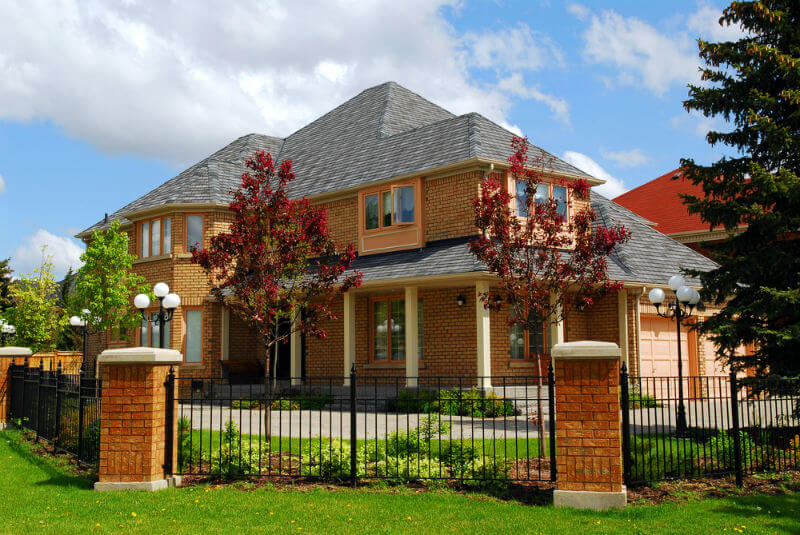

81 дизайн огорож
Перш, ніж гість побачить вашу кухню, вітальню, фойє або домашній кінотеатр, перше, що вони помічають, це паркан у вашому дворі. Є багато доступних конструкцій огорожі. Хоча установка може бути трохи складною. Не планування вперед може призвести до затримок і ускладнень. Перше, що потрібно вирішити - це, які стилі паркану будуть краще всього підходять на вашому подвір'ї. Витратьте час, щоб дізнатися про парканах. Розуміти їх функціональність, використовуваний матеріал, мета і висоту. Гарне розуміння цих атрибутів необхідно перед викликом підрядника по огорожі. Без належного дослідження, ви не можете отримати паркан, який відповідає вашим вимогам.Перше що потрібно знати, це де розташувати Ваш новий паркан? Чи ви огорожуєте свій двір, щоб позначити межу Вашої власності чи просто, щоб додати йому естетичної цінності? Чи мова йде про фасад чи про задній двір. Огорожа перед двором повинна мати гарний вигляд з вулиці і бути прикрасою його околиць. Це може бути паркан для огорожувати домашніх тварин або дітей і захищати від вуличного руху. Розуміння основної цілі вашої огорожі допоможе визначити який тип паркана Вам найбільше підходить. Коли справа доходить до огородження ззаду будинку - існує багато причин для його встановлення. Встановлення огорожі покращує естетичну привабливість території. Хоча вона може служити й іншим цілям. Огорожі заднього двору, наприклад, можуть допомогти зберегти Ваш ландшафт закритим і під контролем. Це також відділяє Ваш задній двір від сусідів, зберігаючи речі аккуратно відокремленими. Він також виконує ті самі функції що і на переді, як безпека і захист дітей і домашнії тварин. Огорожі створюють гарні межі, які не тільки утримають речі всередині, а й ззовні. Це може бути засіб для відлякування грабіжників, яким незначним він би не був, а також допомагає утримати більшість диких тварин від вашої домівки. В деяких парканів є колючий дріт, щоб не дати людям і тваринам зайти на Вашу територію. Деякі паркани оснащені електрикою підключеною до них, щоб вдарити зарядом будь-кого хто торкнеться його. Ці типи огорож дійсно хороші для безпеки. Багато домовласників полюбляють з друзями поїсти на столику для пікніка або на ганку. Паркан забезпечить Вам спокій, щоб чужі люди не заходили до Вас під час відпочинку. Він надасть Вам необхідну конфіденційність, а також відчуття безпеки.
 Коли Ви оприділились з метою та причиною, для чого Вам потрібний паркан, Ваше наступнє рішення буде визначитись
з його висотою. Для паркана, який просто добавляє естетичної привабливості Вашому будинку, Вам ймовірно
потрібний тільки паркан висотою в декілька футів. Однак, якщо ви хочете усамітнитись, тоді Ви можете встановити
паркан висотою 5 - 7 футів. Перш ніж ви вирішуєте вибір висоти вашого паркану, майте на увазі, що у деяких
містах висота кришки огорожі становить близько 6 футів, але у вашого міста можуть бути різні вимоги. Фактично,
місто може вимагати, щоб огородження в районі мали певний колір і матеріал. Тому розберіться з цим до того як
Ваш підрядник буде закуповувати матеріали для огорожі. Паркан, призначення якого в основному косметичне, не
повинен бути зроблений з чого-небудь, що є особливо міцним. Однак, якщо конфіденційність і безпека є головними
цілями, то ви хочете щось міцне, яке буде на довгі роки. Нижче наведені деякі з найбільш поширених матеріалів,
що використовуються та їх переваги:
Коли Ви оприділились з метою та причиною, для чого Вам потрібний паркан, Ваше наступнє рішення буде визначитись
з його висотою. Для паркана, який просто добавляє естетичної привабливості Вашому будинку, Вам ймовірно
потрібний тільки паркан висотою в декілька футів. Однак, якщо ви хочете усамітнитись, тоді Ви можете встановити
паркан висотою 5 - 7 футів. Перш ніж ви вирішуєте вибір висоти вашого паркану, майте на увазі, що у деяких
містах висота кришки огорожі становить близько 6 футів, але у вашого міста можуть бути різні вимоги. Фактично,
місто може вимагати, щоб огородження в районі мали певний колір і матеріал. Тому розберіться з цим до того як
Ваш підрядник буде закуповувати матеріали для огорожі. Паркан, призначення якого в основному косметичне, не
повинен бути зроблений з чого-небудь, що є особливо міцним. Однак, якщо конфіденційність і безпека є головними
цілями, то ви хочете щось міцне, яке буде на довгі роки. Нижче наведені деякі з найбільш поширених матеріалів,
що використовуються та їх переваги:
Приклади огорож з різноманітних матеріалів
Дерево
Ви можете морити або фарбувати дерево в відповідності с навколишнім стилем. Деревяний паркан може існувати від 15 до 20 років. Деревяні огорожі можуть служити як паркан для приватного життя, так і декоративним цілям. Існує багато видів деревини, з яких можна виготовляти огорожі з ялини, сосни, червоного дерева і кедру. Деякі з них навіть зроблені з композитної деревини (з перероблених матеріалів) і повинні бути проморені до кінця, щоб протистояти стихіям. Дерев'яні паркани вимагають регулярного обслуговування та іноді підфарбовування, щоб збільшити їх довговічність. Коли справа доходить до безпеки, дерев'яний паркан не найкращий вибір, тому що його можна легко зламати, щоб увійти у ваш двір. Цей невеликий задній двір закритий горизонтальним дерев'яним парканом. З патіо, є достатньо місця для приємного
барбекю.
Цей невеликий задній двір закритий горизонтальним дерев'яним парканом. З патіо, є достатньо місця для приємного
барбекю.
 Ось хороший низький паркан, який пофарбований в чорне з білими кінчиками зверху.
Це приклад будинку на морі з білим парканом.
Ось хороший низький паркан, який пофарбований в чорне з білими кінчиками зверху.
Це приклад будинку на морі з білим парканом.
Вініл
Цей варіант призначений для тих, хто хоче мати хорошу естетику і довговічність. Вініл триває довго і може бути встановлений як штахетник або паркан з дощок. Кольори дещо обмежені, оскільки він доступний тільки в нейтральних відтінках. Цей матеріал не можна морити або фарбувати, як дерево. Вініл вологостійкий, але може розвиватися цвіль при впливі вологих умов протягом тривалого періоду часу. Це означає, що будь-які спринклери (оприскувачі) у дворі повинні зберігатися досить далеко, щоб не потрапити в вінілову огорожу.
Метал
Багато парканів зроблено з металу. Він міцний, універсальний і поставляється в багатьох стилях. Його можна використовувати для прикраси, конфіденційності та безпеки. Нижче наведені найбільш поширені види металу, які використовуються для огорожі.Алюміній
Що стосується металевих варіантів огорожі, їх багато. Тип, який ви обираєте для установки, буде залежати від того, скільки вам потрібно безпеки та конфіденційності. Паркани з алюмінію дуже міцні, довговічні і забезпечують відмінний захист. Вони дуже ефективні для оберігання дітей і домашніх тварин від небажаних територій. Вони можуть поставлятися в двох і 3-рейковому типах, які надзвичайно міцні. За ними потрібно дуже мало догляду. Все, що їм потрібно, це час від часу їх мити.Сталь
Сталевий паркан - це ще більш сильний паркан, ніж алюмінієвий, і він відмінно підходить для безпеки. Рейки сталевого загородження витримують в 4 рази більше ударів, ніж алюмінієві. Вони також краще захищають від ерозії, викликаної кліматом. Вони практично не вимагають догляду Крутий паркан і ворота формують вид на вражаючу будівля. Паркан створений із сталі з дуже деталізованим дизайном
кіл, трикутників і інших форм.
Крутий паркан і ворота формують вид на вражаючу будівля. Паркан створений із сталі з дуже деталізованим дизайном
кіл, трикутників і інших форм.
Коване залізо
Цей тип огорожі також відмінний з міркувань безпеки. Він міцний і може прослужити вам до 50 років і більше, якщо ви його, доглядаєте належним чином. Щоб отримати максимальний захист від такого паркану, рекомендується встановити його з висотою не менше 6 футів. Ті, які 4 фути заввишки, вважаються середнім рівнем безпеки.  Видний цегляний будинок знаходиться на огороженій території. Цегляна колона металевого паркану виглядає так само, як і будинок. Трава добре зберігається, як і дерева, і кущі. Старий величний двоповерховий будинок спроектований в іспанському стилі. Тема жовтого і білого кольору добре
підходить для цього місця. Дизайн воріт огорожі майстерно зроблений з квітковим візерунком. Огорожа являє собою
комбінацію каменю і металу.
Старий величний двоповерховий будинок спроектований в іспанському стилі. Тема жовтого і білого кольору добре
підходить для цього місця. Дизайн воріт огорожі майстерно зроблений з квітковим візерунком. Огорожа являє собою
комбінацію каменю і металу.
 Це рожевий двоповерховий сучасний будинок. Зовнішня сторона захищена металевим парканом з синього металу. Дерева
і кущі за огорожею використовуються для усамітнення від сторонніх очей.
Це рожевий двоповерховий сучасний будинок. Зовнішня сторона захищена металевим парканом з синього металу. Дерева
і кущі за огорожею використовуються для усамітнення від сторонніх очей.
 На цьому господарстві передній паркан має темно-синій зелений колір і зроблений з міцного металу. Це
декоративний короткий паркан, але високі кущі служать природний приватний паркан.
На цьому господарстві передній паркан має темно-синій зелений колір і зроблений з міцного металу. Це
декоративний короткий паркан, але високі кущі служать природний приватний паркан.
 Паркан з кованого заліза, зображений вище, покриває весь двір. Верхня частина паркану має золоті шипи для
елегантного зовнішнього вигляду, а також для захисту від злому. Ворота утримуються разом великий цегляної
колоною
Паркан з кованого заліза, зображений вище, покриває весь двір. Верхня частина паркану має золоті шипи для
елегантного зовнішнього вигляду, а також для захисту від злому. Ворота утримуються разом великий цегляної
колоною
 Цей триповерховий будинок - справжня перлина. Майно має два великих балкони, з яких відкривається вид на гори.
Коричневий заміський паркан містить будинок і невеликий сад.
Цей триповерховий будинок - справжня перлина. Майно має два великих балкони, з яких відкривається вид на гори.
Коричневий заміський паркан містить будинок і невеликий сад.
 Декоративний металевий паркан чорного кольору обрамляє кожну бік вузької цементною доріжкою. Він веде до входу у
цей величний європейського стилю триповерхову будівлю.
Декоративний металевий паркан чорного кольору обрамляє кожну бік вузької цементною доріжкою. Він веде до входу у
цей величний європейського стилю триповерхову будівлю.
 Гарний металевий паркан будинку межує з цим чудовим двоповерховим кремово-жовим житлом. Передні ворота ведуть до
декількох сходинок і головного входу.
Гарний металевий паркан будинку межує з цим чудовим двоповерховим кремово-жовим житлом. Передні ворота ведуть до
декількох сходинок і головного входу.
 Ландшафтний паркан дає відвідувачам візуальне захоплення перед тим, як наблизитися до входу в будинок. Паркан
короткий. Це в основному для того, щоб добре виглядати, що він і робить з характерними візерунками. Сам будинок
великий з коричнево-білою кольоровою гамою.
Ось прекрасний будинок у передмісті. Паркан і ворота являють собою простий металевий дизайн. Колони і фундамент
- це нестандартний камінь. Високі дерева висаджуються за парканом, щоб збільшити приватність.
Ландшафтний паркан дає відвідувачам візуальне захоплення перед тим, як наблизитися до входу в будинок. Паркан
короткий. Це в основному для того, щоб добре виглядати, що він і робить з характерними візерунками. Сам будинок
великий з коричнево-білою кольоровою гамою.
Ось прекрасний будинок у передмісті. Паркан і ворота являють собою простий металевий дизайн. Колони і фундамент
- це нестандартний камінь. Високі дерева висаджуються за парканом, щоб збільшити приватність.
Цегла
Цегляний паркан є одним з найдорожчих варіантів паркану. Тим не менш, він також є одним з найбільш безпечних варіантів приватності для двору. Цегла фактично не вимагає догляду і дає вам кращий захист відповідно до висоти. Це також відмінний звуковий бар'єр, що робить його ліпшим для барбекю та вечірок в басейні на задньому дворі. Проте, щоб мати цегляну стіну навколо двору, потрібен міцний фундамент. Якщо земля під ним розмивається, тоді весь паркан може завалитися. Нижче наведено кілька ідей для парканів.
Скло
Скляні паркани зазвичай використовуються навколо басейнів в якості огорожі. Він нього мало толку для безпеки або конфіденційності, так як цей матеріал прозорий і через нього легко перелізти. Використання скла для огорожі додає сучасний стильний стиль у ваш інтер'єр. Скло вимагає багато догляду, чищення, так як воно легко забруднюється порохами. Саме по собі скло може служити довгий час. Однак, воно не дуже міцне, якщо по ньому вдарити тупим предметом. Безмежний скляний паркан створює видимість більш відкритого простору. Відвідувачі можуть побачити акуратно
доглянуту траву з тротуару.
Безмежний скляний паркан створює видимість більш відкритого простору. Відвідувачі можуть побачити акуратно
доглянуту траву з тротуару.
 Це критий басейн. Сучасне скляне огородження дозволяє людям насолоджуватися приголомшливим видом на океан з
верху.
Це критий басейн. Сучасне скляне огородження дозволяє людям насолоджуватися приголомшливим видом на океан з
верху.
Бамбук
Бамбук насправді тип трави. Ці паркани в основному використовуються декоративно. Це стійкий ресурсний матеріал, так як бамбук росте досить швидко. Бамбук додає свого роду елемент азіатського стилю до Вашого саду. Ще одна перевага бамбуку - його довговічність, міцність і мала потреба в догляді.
 Основний паркан з бамбука направляє відвідувачів кам'яними сходами до парку.
Основний паркан з бамбука направляє відвідувачів кам'яними сходами до парку.
 Малий сад з різними рослинами, квітковими і бамбуковими огороджувальними панелями.
Малий сад з різними рослинами, квітковими і бамбуковими огороджувальними панелями.Останнє міркування при виборі паркану - правильний вибір. Знову ж таки, необхідно встановити пріоритети. Що найважливіше? Це безпека, конфіденційність або зовнішній вигляд?
Типи паркану за призначенням
Конфіденційність та безпека
Огорожа для захисту приватності, як правило, високі, охоплюють шість футів або й більше і не мають отворів, є проміжками в них. Його мета - не допустити, щоб люди побачили те що за огорожею. Між тим охоронні огорожі служать перешкодою для проникнення порушників. Знову ж таки, це більш високі паркани, які складно збільшувати. Більшість часу така огорожа служить для безпечного приватного життя. Вона може бути виготовлена з різних матеріалів. Звичайно включають метал, дерево, цеглу і вініл.Ось два приклади, які забезпечують конфіденційність та безпеку. З цим парканом нетреба турбуватись про людей, які заглядають у вашу чудову изольовану кухню. Високий дерев'яний паркан, без проміжків між ними, не дозволяє людям зовні заглядати всередину.
 Сильний і високий паркан забезпечує безпеку і конфіденційність, необхідні жителям.
Більше приватних парканів тут
Сильний і високий паркан забезпечує безпеку і конфіденційність, необхідні жителям.
Більше приватних парканів тут
Декоративні
Декоративні паркани використовуються для дизайну та декору огорожі. Вони, як правило, короткі і доповнюють стилістику околиць. Популярно використовувати їх навколо садів, подвір'я і на відкритому повітрі. Ідеї декоративного забору бувають різних форм. В даному випадку - це короткий білий паркан, що веде до будинку.
Він має квадратну і прямокутну конструкцію.
Ідеї декоративного забору бувають різних форм. В даному випадку - це короткий білий паркан, що веде до будинку.
Він має квадратну і прямокутну конструкцію.
 Ось проста ідея паркану,як варіант. Це дерев'яний паркан з довгими і короткими стовпчиками, що чергуються.
Ось проста ідея паркану,як варіант. Це дерев'яний паркан з довгими і короткими стовпчиками, що чергуються.
 Металевий червоний паркан в азіатському стилі підкреслює ставок в японському саду
Металевий червоний паркан в азіатському стилі підкреслює ставок в японському саду
 Садова решітка - паркан, допомагає тримати і влаштувати квіти і кущі.
Садова решітка - паркан, допомагає тримати і влаштувати квіти і кущі.
 Цей сліпуче високо профільний сірий будинок з великими вікнами. Творчий паркан спереді надає двору елегантний
стиль.
Цей сліпуче високо профільний сірий будинок з великими вікнами. Творчий паркан спереді надає двору елегантний
стиль.
 Вище вказаний цегляний будинок прикрашений коричневим штахетником.
Вище вказаний цегляний будинок прикрашений коричневим штахетником.
 Декоративний білий металевий паркан прикрашає цей тротуар на пляжі.
Декоративний білий металевий паркан прикрашає цей тротуар на пляжі.
 Чорну металеву огорожу із зірковим дизайном виходить на річку.
Чорну металеву огорожу із зірковим дизайном виходить на річку.
Сад
Білий сад паркан оточує акуратне ложе з троянд. Іноді простота краще. Цей невеликий садовий паркан - метал з петлями. Він межує з газоном і квітами.
Іноді простота краще. Цей невеликий садовий паркан - метал з петлями. Він межує з газоном і квітами.
 Кована огорожа саду захищає маленькі квіти біля дверей.
Свіжі органічні продукти завжди кращі. Паркан овочевого саду являє собою прекрасне повернення назад в цей
веганський рай.
Недорога огорожа часто є тим, що потрібно щоб зробити роботу. В той час як це ніколи не буде найдовшим парканом,
в одночас він додає дуже необхідний декор в сад.
Кована огорожа саду захищає маленькі квіти біля дверей.
Свіжі органічні продукти завжди кращі. Паркан овочевого саду являє собою прекрасне повернення назад в цей
веганський рай.
Недорога огорожа часто є тим, що потрібно щоб зробити роботу. В той час як це ніколи не буде найдовшим парканом,
в одночас він додає дуже необхідний декор в сад.
 Ось крихітний бамбуковий, короткий паркан для саду. Це лише для краси, і воно відмінно працює.
Тут у нас є ще один залізний паркан саду, що оточує маленький рожевий кущ.
Ось крихітний бамбуковий, короткий паркан для саду. Це лише для краси, і воно відмінно працює.
Тут у нас є ще один залізний паркан саду, що оточує маленький рожевий кущ.
Басейн
Цей неймовірний басейн викладений світло-блакитною плиткою і оснащений джакузі. Сучасний дизайн паркану об'єднує метал і скло. Підлога біля басейну викладена сланцем. Це задній двір двоповерхового будинку. Половина це трава. Інша половина має помаранчеві плиткові підлоги і
прямокутний басейн. Безрамковий паркан з скляного басейну охоплює басейн, створюючи ілюзію безмежного периметра.
Це задній двір двоповерхового будинку. Половина це трава. Інша половина має помаранчеві плиткові підлоги і
прямокутний басейн. Безрамковий паркан з скляного басейну охоплює басейн, створюючи ілюзію безмежного периметра.
Стилі огорож
Решітка
Ґратчасті огорожі мають діагональні конструкції з кроком в 2 дюйми між панелями з дерева, ПВХ або вінілу. Це може забезпечити вам небагато приватності, але є ще невеликі отвори, які дозволяють проникати світлу. Багато людей використовують цей вид огорож навколо своїх садів і для вирощування стін з плюща. Існує також варіант такого паркану, де тільки верх є Ґратчастий. Таким чином, він може служити приватним і декоративним парканом.

Огорожа сіткою
Конструкція огорожі з сіткою виготовляється із сталевих проводів або оцинкованих стальних дротів, які утворюють зигзагоподібний алмазний візерунок. Ці огорожі добре справляються з утиманням домашніх тварин та дітей, але не такі хороші в безпеці чи конфіденційності, якщо тільки захисний екран не встановлений на огорожу щоб закривати отвори. Екрани для огорожі можна використовувати щоб захищатись від вітеру і пилу.

Штахетник
Штахетники - це традиційні декоративні огорожі, які є дуже поширеними на передньому подвір’ї. Вони зазвичай висотою близько трьох футів, привабливі і мають рівномірно розташовані дошки, встановлені вертикально. Вони можуть бути виготовлені з вінілу, листового металу або дерева. Вони кріпляться до рейок. Ці огорожі переважно для естетики. Не розраховуйте на них для будь-якої безпеки чи конфіденційності. Нижче наведено кілька видів огорож зі штахетника.Білий
 На фотографії вище зображено будинок у стилі котеджу на розі вулиці. А традиційний білий паркан штахетник, що
обрамляє будинок, є одним з найбільш бажаних ідей огорожі. Будівля має дах зелено-морського коліру і віконні
панелі невеликий сад, повний кущів рожевих троянд.
На фотографії вище зображено будинок у стилі котеджу на розі вулиці. А традиційний білий паркан штахетник, що
обрамляє будинок, є одним з найбільш бажаних ідей огорожі. Будівля має дах зелено-морського коліру і віконні
панелі невеликий сад, повний кущів рожевих троянд.
 На малюнку вгорі зображений не зовсім білий штакетник. Матеріалами є суміш кам’яних стовпчиків та вінілу для
самої огорожі. Вершина огорожа загострена і ворота мають приємний звивистий стиль.
На малюнку вгорі зображений не зовсім білий штакетник. Матеріалами є суміш кам’яних стовпчиків та вінілу для
самої огорожі. Вершина огорожа загострена і ворота мають приємний звивистий стиль.
 Ось простий будинок з зовнішною огорожею. Він сірого кольору з квадратними панелями, які рівномірно розподілені.
Огорожа відповідає кольору будинку так само. В цілому, будинок і газон знаходиться в хорошому стані.
Ось простий будинок з зовнішною огорожею. Він сірого кольору з квадратними панелями, які рівномірно розподілені.
Огорожа відповідає кольору будинку так само. В цілому, будинок і газон знаходиться в хорошому стані.
 На малюнку вище показаний приклад садового паркану. Він скаладаєтсья з двох частин. Низ вугільно-сірий, а верх
білий. Обидві частини виготовлені з дерева. Перед брамою зі штакетника є альтанка.
Білий залізний паркан має особливий спадаючий дизайн. Призначення в нього більш декоративне ніж для безпеки.
Верхня частина загострена, що ускладнює можливість перескочити без травм. Однак це не та перепона, яку неможливо
обійти.
Ось проста ідея огорожі заднього двору. Це білий штакетинк, в якого плоский верх, а дерев’яні дошки чергуються
між великими та малими. І це чудово виглядає на зеленій галявині.
Огорожа на вході веде до цегляної доріжки котра йде до будинку. Цей паркан білий і виготовлений з металу. Він
середньої висоти з чередованими довгими та короткими штиками.
На малюнку вище показаний приклад садового паркану. Він скаладаєтсья з двох частин. Низ вугільно-сірий, а верх
білий. Обидві частини виготовлені з дерева. Перед брамою зі штакетника є альтанка.
Білий залізний паркан має особливий спадаючий дизайн. Призначення в нього більш декоративне ніж для безпеки.
Верхня частина загострена, що ускладнює можливість перескочити без травм. Однак це не та перепона, яку неможливо
обійти.
Ось проста ідея огорожі заднього двору. Це білий штакетинк, в якого плоский верх, а дерев’яні дошки чергуються
між великими та малими. І це чудово виглядає на зеленій галявині.
Огорожа на вході веде до цегляної доріжки котра йде до будинку. Цей паркан білий і виготовлений з металу. Він
середньої висоти з чередованими довгими та короткими штиками.
 Красивий двоповерховий будинок із висхідним дерев'яним парканом над цегляним фундаментом. Колір огорожі
відповідає коліру підвіконня і дверної рами. Це одна з класичних ідей огорожі переднього двору навколо.
Красивий двоповерховий будинок із висхідним дерев'яним парканом над цегляним фундаментом. Колір огорожі
відповідає коліру підвіконня і дверної рами. Це одна з класичних ідей огорожі переднього двору навколо.
 Великий будинок має чорні акценти вікон та величезний передній двір. Він обгороджений білим парканом звідусіль.
Великий будинок має чорні акценти вікон та величезний передній двір. Він обгороджений білим парканом звідусіль.
Гребінець
 Гарний заміський будинок зі штакетником, який має хвилясту форму вгорі. Даний тип паркану також відомий як
огорожа з надмірним гребінцем. Це стилі паркану з дерева, які можуть додати нотку панаше у ваш будинок.
Гарний заміський будинок зі штакетником, який має хвилясту форму вгорі. Даний тип паркану також відомий як
огорожа з надмірним гребінцем. Це стилі паркану з дерева, які можуть додати нотку панаше у ваш будинок.
Просто розставлений
 Ще одна варіація штакетнику. Цей не має жодної іншої мети, як добре виглядати на передньому подвір’ї. Білий
колір створює приємний контраст з яскраво-червоним і темно-зеленим кольорами.
Ще одна варіація штакетнику. Цей не має жодної іншої мети, як добре виглядати на передньому подвір’ї. Білий
колір створює приємний контраст з яскраво-червоним і темно-зеленим кольорами.
Інші типи загород
Дерев'яний паркан, огорожа
Люди бачать, що багато цих парканів використовуються на ранчо чи фермах. Вони є зазвичай виготовлені із довгих парканових дощок або бруса, а тоді розколені на рейки. Цей тип огорожі має свою декоративну цінність, і крім того утримує тварин всередині, та позначає межу власності. Кількість розділених рейок є змінною.Двох рейковий паркан
Ось приклад паркану з двома рейками. Він загалом виконує тільки косметичну роль. Однак це виглядає досить приємно, оскільки колір огорожі підходить під колір даху. На фото вище - традиційний дизайн горизонтальної огорожі. Він виготовлений з вінілу (полівінілхлориду) і має дві
рейки. Вони ідеально поєднуються з підвіконням.
На фото вище - традиційний дизайн горизонтальної огорожі. Він виготовлений з вінілу (полівінілхлориду) і має дві
рейки. Вони ідеально поєднуються з підвіконням.
Трьох рейковий паркан
 Цей прекрасний краєвид показує, наскільки мирним може бути життя. Нічого крім яскраво-зеленої трави на милі
навкруги. Дерев’яне огородження ферми просте і недороге.
Трьох рейкова огорожа ферми утримує коней в загоні на цьому ранчо. Тут нічого особливого. Просто звичайний
паркан, який виконує роботу.
Цей прекрасний краєвид показує, наскільки мирним може бути життя. Нічого крім яскраво-зеленої трави на милі
навкруги. Дерев’яне огородження ферми просте і недороге.
Трьох рейкова огорожа ферми утримує коней в загоні на цьому ранчо. Тут нічого особливого. Просто звичайний
паркан, який виконує роботу.
Чотири рейки
Великі площі пишної зеленої трави оточують цей приголомшливий будинок. Огорожа ранчо складається з чотирьох рейок. Я впевнений, що в цьому помісті є щасливі коні.Тесані колоди і балки
 Ось одна з найбільш простих і дешевих ідей паркану. Просто купуйте кілька балок, складайте їх разом і збиваєте
кожні дві балки разом. Це теж виглядає непогано.
Ось одна з найбільш простих і дешевих ідей паркану. Просто купуйте кілька балок, складайте їх разом і збиваєте
кожні дві балки разом. Це теж виглядає непогано.
 Ось привабливий пишний сад. У нього є кам'яні вимощені стежки з великою кількістю квітів з кожної сторони.
Незвичайний заміський паркан додає до цього чарівності.
На зображенні вище показана ферма з дорогою, що веде до фермерського будинку. Фігурна огорожа обмежує коней і
дозволяє їм мирно пастися.
Ось привабливий пишний сад. У нього є кам'яні вимощені стежки з великою кількістю квітів з кожної сторони.
Незвичайний заміський паркан додає до цього чарівності.
На зображенні вище показана ферма з дорогою, що веде до фермерського будинку. Фігурна огорожа обмежує коней і
дозволяє їм мирно пастися.
 Бути на природі - відмінне місце для відпочинку і роздумів про життя. Ця велична рублена хата затишна і
велична. Там є доріжка і захисний паркан, який також зроблений з колоди.
У цьому зеленому лісі багато високих дерев червоного дерева. Тесаний дерев'яний паркан створює безперешкодний
шлях для любителів подорожувати по природі.
Бути на природі - відмінне місце для відпочинку і роздумів про життя. Ця велична рублена хата затишна і
велична. Там є доріжка і захисний паркан, який також зроблений з колоди.
У цьому зеленому лісі багато високих дерев червоного дерева. Тесаний дерев'яний паркан створює безперешкодний
шлях для любителів подорожувати по природі.
 Ця горизонтальна огорожа дозволяє відвідувачам дістатися якомога ближче до озера і сценічного вигляду на
великий ліс і гори.
Ця горизонтальна огорожа дозволяє відвідувачам дістатися якомога ближче до озера і сценічного вигляду на
великий ліс і гори.
 Неглибокий ставок обрамлений декоративною дерев'яною огорожею. На задньому плані багато дерев, кущів та інших
рослин.
Ця картина настільки захоплююча, що вона може бути на листівці. Довгі трав'янисті дороги ведуть до маленького
міста недалеко від гір. Кедровий паркан йде по шляху вздовж дороги.
Неглибокий ставок обрамлений декоративною дерев'яною огорожею. На задньому плані багато дерев, кущів та інших
рослин.
Ця картина настільки захоплююча, що вона може бути на листівці. Довгі трав'янисті дороги ведуть до маленького
міста недалеко від гір. Кедровий паркан йде по шляху вздовж дороги.
 Чотири рейковий горизонтальний паркан для коней оточує цю тварину в осінній день.
Чотири рейковий горизонтальний паркан для коней оточує цю тварину в осінній день.
Дріт
Огорожа, зроблена за допомогою дроту, використовується для утримання людей або тварин в певному просторі або поза ним. Деревина зазвичай використовується як стовп з проводкою між ними. Це одна з багатьох дешевих ідей огорожі для ферм і відкритих майданчиків. Цей тип огорожі зазвичай складає від трьох до чотирьох футів у висоту. Хоча це є стримуючий засіб, воно не є сильним. Ферма має довгі ділянки землі, позначені цим парканом з дерева й дроту.
Приклад простого дротового огородження. Деревина використовується як стовпи і дротова сітка як огородження.
Пішохідні стежки звичайно вистелені дротяними огородженнями, щоб туристи не блукали по небезпечних грунтових
територіях.
Ферма має довгі ділянки землі, позначені цим парканом з дерева й дроту.
Приклад простого дротового огородження. Деревина використовується як стовпи і дротова сітка як огородження.
Пішохідні стежки звичайно вистелені дротяними огородженнями, щоб туристи не блукали по небезпечних грунтових
територіях.
Плетений паркан
 Сніг покриває парк в холодний день. Це тип декоративного паркану, який часто не видно. Сітка з плетеного кошика
використовує металеві перила і стійки щоб тримати дерев'яне плетиво.
Сніг покриває парк в холодний день. Це тип декоративного паркану, який часто не видно. Сітка з плетеного кошика
використовує металеві перила і стійки щоб тримати дерев'яне плетиво.